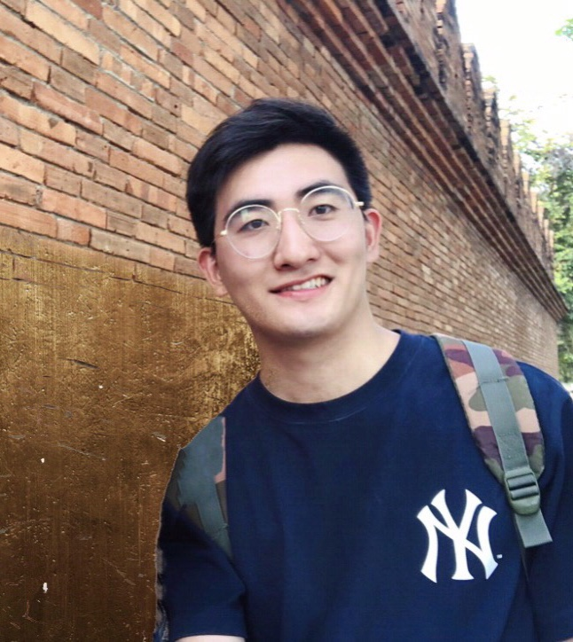

Quande LiuPh.D.
Rm 1024, Ho Sin-Hang Engineering Building
|
 |


Biography
I am currently a second year Ph.D. student in the Department of Computer Science and Engineering, The Chinese University of Hong Kong, supervised by Prof. Pheng-Ann Heng and Prof. Qi Dou. Previously, I received the B. Eng degree from Department of Electrical Engineering in Zhejiang University in 2018, with admission to Mixed Class of Chu Kochen Honors College.
My research interest lies in medical image analysis and deep learning, for improving the public healthcare & medical diagnosis with machine intelligence. Recently, I investigate model generalization and robustness by exploiting multi-site (multi-center) data efforts.
News
- [06/2020] Paper on domain generalization for medical image segmentation was early accepted by MICCAI 2020.
- [05/2020] Two papers on semi-supervised learning and multi-site learning was accepted by IEEE TMI.
- [02/2020] Paper on multi-site learning with domain-specific design was accepted by IEEE TMI.
- [12/2019] Paper on unpaired multi-modal learning was accepted by IEEE TMI.
Selected Publications
-
Shape-aware Meta-learning for Generalizing Prostate MRI Segmentation to Unseen Domains
Quande Liu, Qi Dou, Pheng-Ann Heng.
Medical Image Computing and Computer Assisted Intervention (MICCAI), 2020.[code]
-
Semi-supervised Medical Image Classification with Relation-driven Self-ensembling Model
Quande Liu, Lequan Yu, Luyang Luo, Qi Dou, Pheng-Ann Heng.
IEEE Transactions on Medical Imaging (TMI), 2020. -
MS-Net: Multi-Site Network for Improving Prostate Segmentation with Heterogeneous MRI Data
Quande Liu, Qi Dou, Lequan Yu, Pheng-Ann Heng.
IEEE Transactions on Medical Imaging (TMI), 2020.[code]
-
Unpaired Multi-modal Segmentation via Knowledge Distillation
Qi Dou, Quande Liu, Pheng-Ann Heng, Ben Glocker.
IEEE Transactions on Medical Imaging (TMI), 2020.[code]
Patent
-
Method and device for detecting pulmonary nodule in computed tomography image, and computer-readable storage medium.
Qi Dou, Quande Liu, Hao Chen.
US Patent US20200005460A1, 2018.
Honors & Awards
| Outstanding Graduates Award, awarded by Zhejiang Province, 2018 |
| First-class Scholarship for Research and Innovation, 2017 |
| Runner-up in 11th Robot Competition, Zhejiang University, 2017 |
| Second-class Scholarship for Outstanding Students, 2015-2017 |
| Second-class Academic Scholarship, 2015-2017 |
| Mixed Honors Class in Chu Kochen Honors College, Zhejiang University, 2014 |
Professional Activities
-
Conference/Journal Reviews:
International Conference on Medical Image Computing and Computer-Assisted Intervention (MICCAI) 2020
IEEE Winter Conference on Applications of Computer Vision (WACV) 2020
Medical Image Analysis (MedIA)
IEEE Transactions on Medical Imaging (TMI)
IEEE Transactions on Image Processing (TIP)
IEEE Access
Neurocomputing
Computer Methods and Programs in Biomedicine (CMPB)
Teaching
| 2019-2020 | Spring | Principles of Programming Languages (CSCI 3180) |
| 2019-2020 | Fall | Problem Solving by Programming (ENGG 1110) |
| 2018-2019 | Spring | Problem Solving by Programming (ENGG 1110) |
| 2018-2019 | Fall | Digital Logic and Systems (ENGG 2020) |
© Quande Liu | Last updated: May 2020